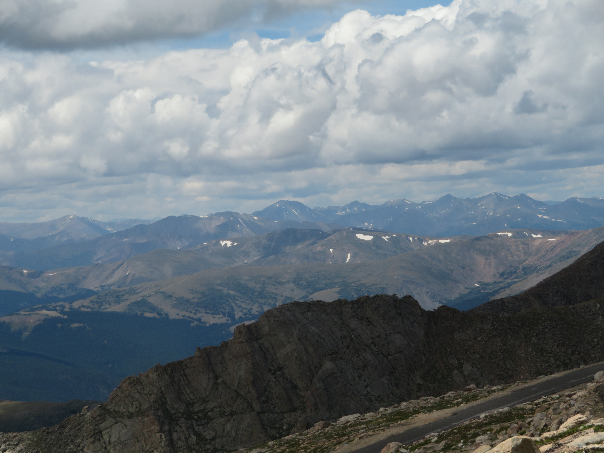
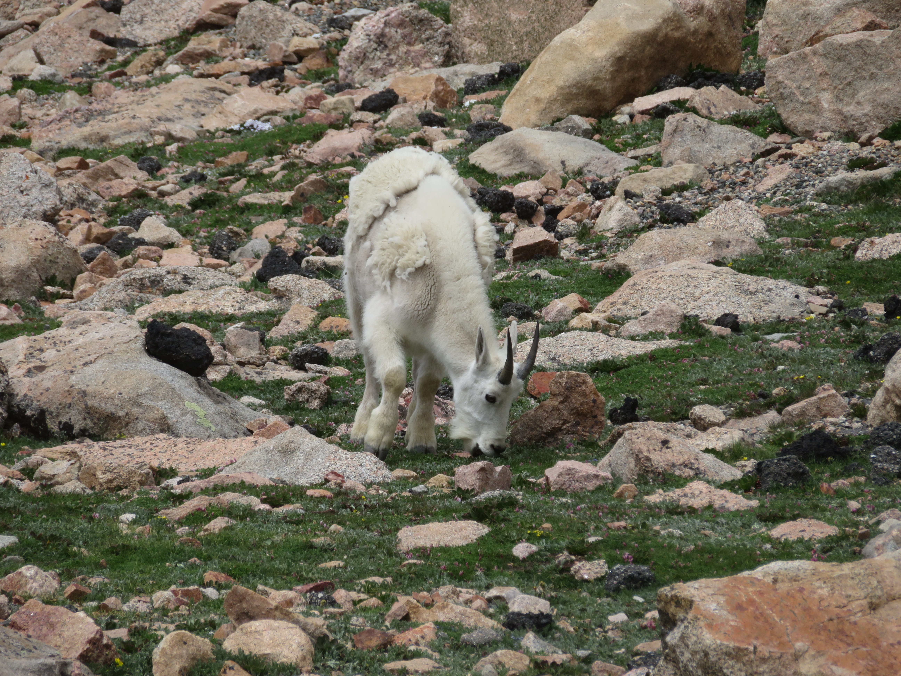
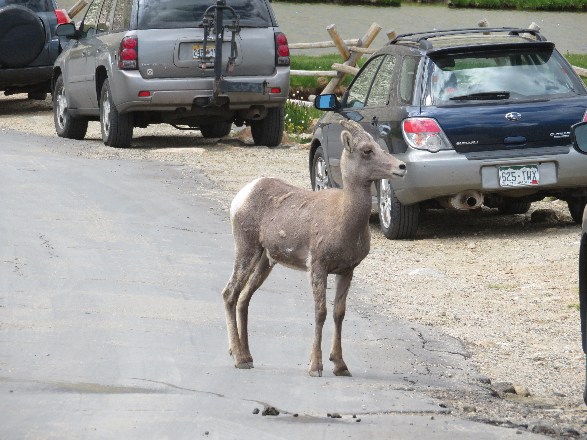
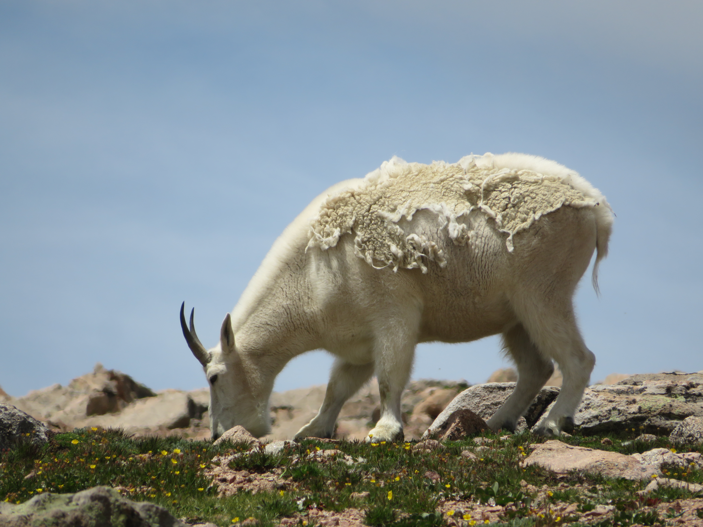
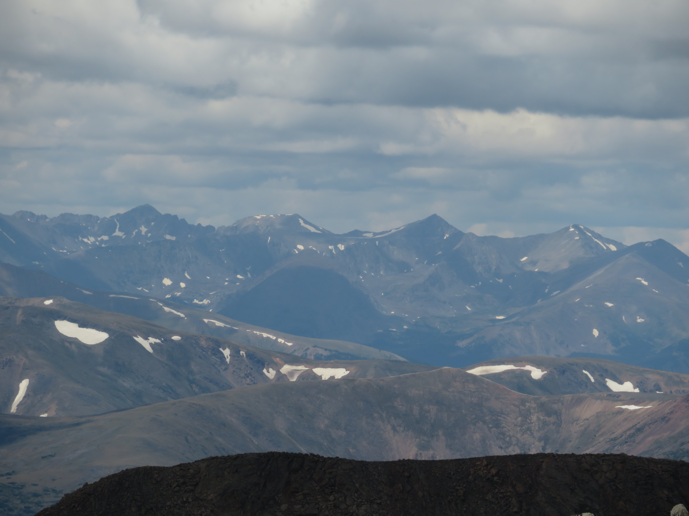
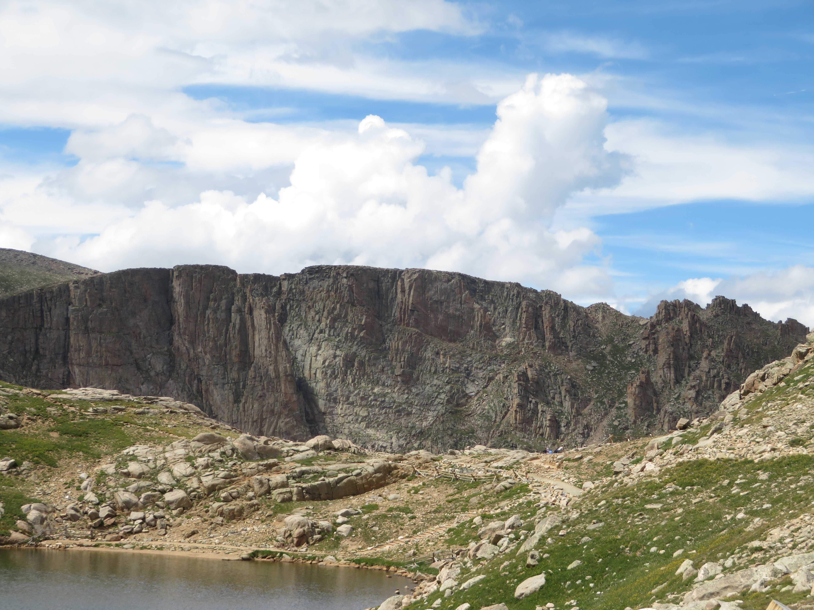
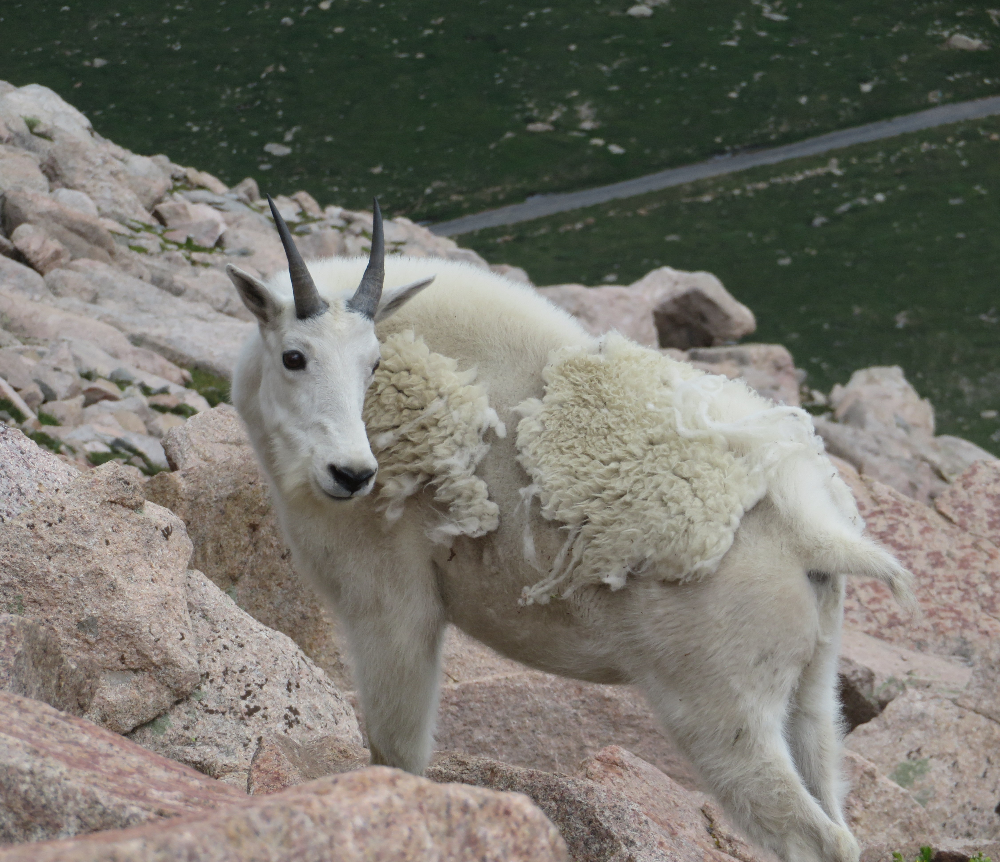
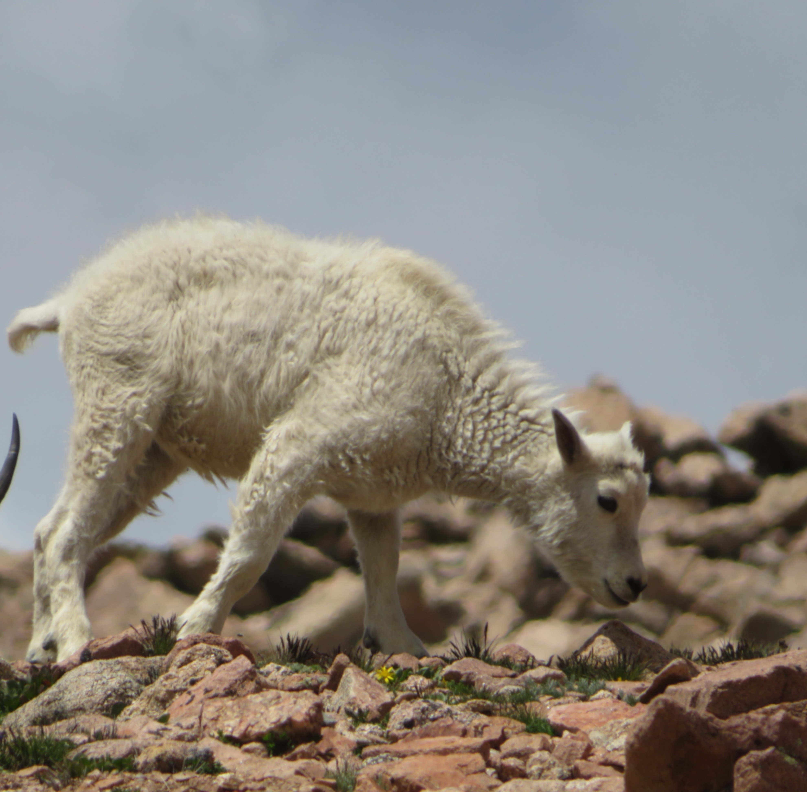

Summit Lake View

View from the top

Mountain Goat

Bighorn Sheep

Mountain Goat
Reaching up to over 4300 meters above sea level, the Mt. Evans Scenic Byway in Colorado to its namesake mountain (now Mt. Blue Sky) is the highest paved road in the United States, containing fantastic scenery and plenty of wildlife opportunities.
Summit Lake View

View from the top

Mountain Goat

Bighorn Sheep

Mountain Goat
The hiking at the top of the mountain is absolutely stunning, bringing great views of Summit Lake below as well as the other Front Range mountains in the background.

View of Summit Lake

Summit Lake

Colorado peaks

View of the summit
While the mountain and alpine views are certainly spectacular, the wildlife along the byway is the highlight of the drive. My favorite wildlife species has to be the Mountain Goats, as I saw multiple herds of goats and their adorable lambs in various points along the drive. Bighorn sheep are also abundant, especially around the Summit Lake area where they often roam on or near the road. Adorable Marmots, squirrels, and pikas are also everywhere too, especially on the rocky trail up to the summit.

Mountain Goat

Mountain Goat

Mountain Goat Lamb

Mountain Goat Lamb

Bighorn Sheep herd

Bighorn Sheep herd

Marmot at the summit

Marmot on the trail